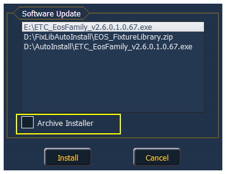

Software Update allows the installation of Eos Family Software and other ETC-approved software (GCE and NCE). Updating Eos Family Software does not affect or update the software in any other networked device such as a Net3 Gateway.
When you click on {Software Update}, the desk looks at the root directory of any connected USB drive for an Eos Family desk software update file. You will be shown the names of any updater files found on the drive. Select the file you would like to install and click the {Install} button, or click {Cancel}. The software will first save to the hard drive before opening the installer.
You will also receive a message if no software update file can be found.

Ion has an installer archive, which saves selected installers directly onto the console's local hard drive. You can save multiple software versions onto your console's hard drive in case you wish to downgrade.
While installing the software, you can archive the installer used. Check the Archive Installer box for the selected version, and it will archive while installing the software. If you would like to archive installers without installing their software, you can do that by using the File Manager utility in ECU>Settings>Maintenance.
You can also retrieve these versions from the archive to save them to a USB drive by using the File Manager.
Note: On new consoles, some versions are preselected to be archived when it initially ships from ETC. This includes the version of software that is currently installed from the factory as well as any patches to that version (if available). For future release, you will need to download the Eos Family software from the ETC website, etcconnect.com